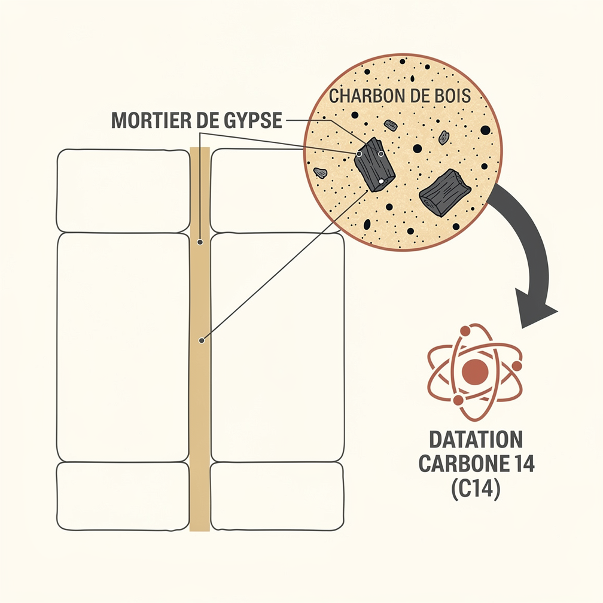
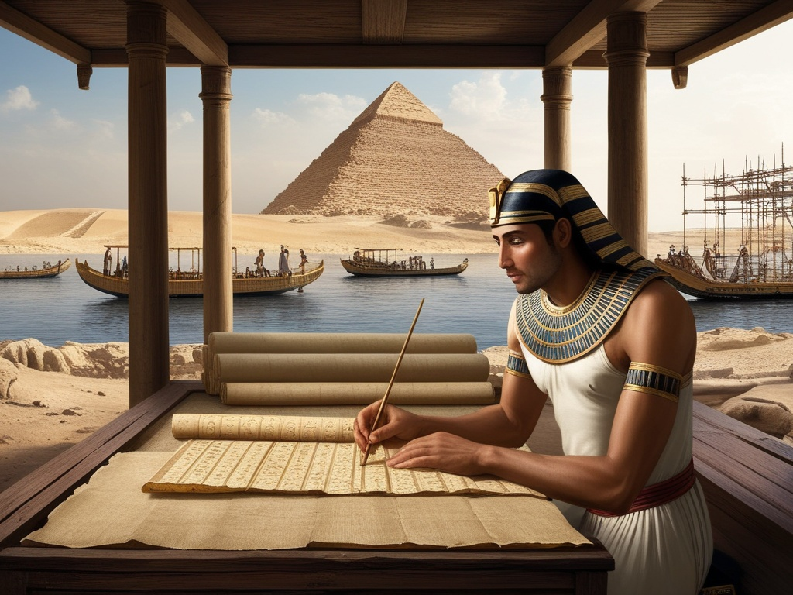
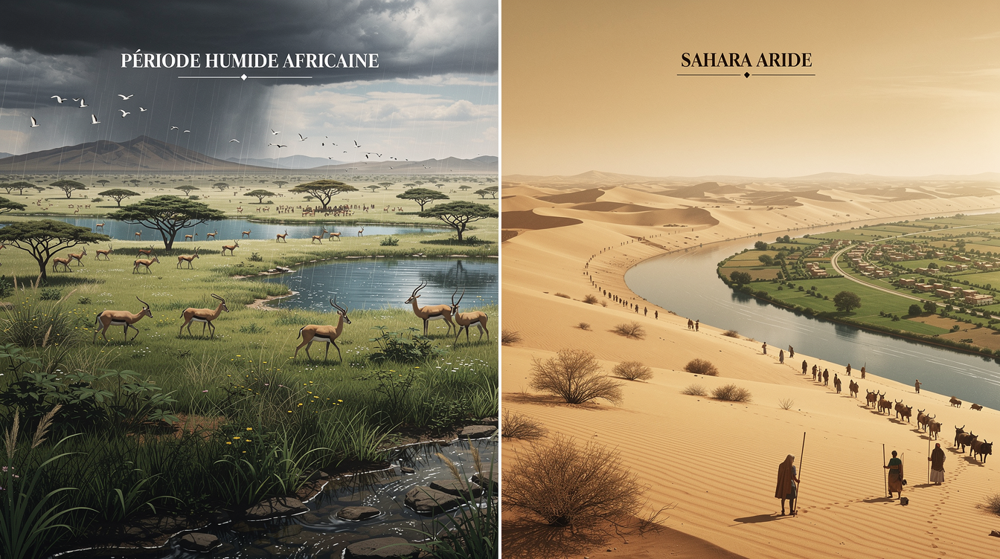

Dater l'impossible : Comment la science détermine l'âge des pyramides
Une objection revient souvent dans les débats sur les théories alternatives : *« On ne peut pas dater la taille d’une pierre. »* Sur un plan strictement minéralogique, cette affirm...
Dater l'impossible : Comment la science détermine l'âge des pyramides
Datar lo imposible: Cómo la ciencia determina la edad de las pirámides
Dating the Impossible: How Science Determines the Age of the Pyramids
1. Introduction : Le paradoxe de la pierre et du temps
1. Introduction : Le mystère des blocs parfaits
1. Introduction : Le mystère des blocs parfaits
Une objection revient souvent dans les débats sur les théories alternatives : « On ne peut pas dater la taille d’une pierre. » Sur un plan strictement minéralogique, cette affirmation est exacte. Un bloc de calcaire s’est formé il y a des millions d’années, et sa découpe ne laisse aucune trace radioactive permettant de déterminer le moment précis où l’outil l’a touchée.
Una objeción surge a menudo en los debates sobre teorías alternativas: «No se puede datar el tallado de una piedra». Desde un punto de vista estrictamente mineralógico, esta afirmación es correcta. Un bloque de caliza se formó hace millones de años, y su corte no deja ninguna huella radiactiva que permita determinar el momento preciso en que la herramienta lo tocó.
An objection often arises in debates about alternative theories: “You cannot date the carving of a stone.” From a strictly mineralogical standpoint, this statement is correct. A limestone block was formed millions of years ago, and its cutting leaves no radioactive trace to determine the precise moment the tool touched it.
Pourtant, l’archéologie moderne ne se limite pas à l’étude de la pierre elle-même. La solution réside dans l’analyse du contexte archéologique : au lieu de chercher à dater le minéral, les chercheurs étudient les matériaux organiques associés à son utilisation par les humains.
Sin embargo, la arqueología moderna no se limita al estudio de la piedra en sí. La solución radica en el análisis del contexto arqueológico: en lugar de buscar datar el mineral, los investigadores estudian los materiales orgánicos asociados a su uso por los humanos.
However, modern archaeology is not limited to studying the stone itself. The solution lies in the analysis of the archaeological context: instead of trying to date the mineral, researchers study the organic materials associated with its use by humans.
À retenir : L’âge d’un monument se déduit des traces de vie laissées par ses bâtisseurs autour des pierres.
A recordar: La edad de un monumento se deduce de las huellas de vida que dejaron sus constructores alrededor de las piedras.
To remember: The age of a monument is deduced from the traces of life left by its builders around the stones.
2. Le mortier et le carbone 14 : La signature chimique des constructeurs
2. Le mortier et le carbone 14 : La signature chimique des constructeurs
2. Le mortier et le carbone 14 : La signature chimique des constructeurs
Pour assembler les blocs des pyramides, les Égyptiens utilisaient un mortier de gypse. Sa fabrication exigeait de chauffer le gypse à haute température, ce qui nécessitait de brûler du bois. Au cours de ce processus, de minuscules fragments de charbon de bois se sont retrouvés piégés dans le mortier encore frais, formant une véritable capsule temporelle.
Para ensamblar los bloques de las pirámides, los egipcios utilizaban un mortero de yeso. Su fabricación requería calentar el yeso a alta temperatura, lo que exigía quemar madera. Durante este proceso, diminutos fragmentos de carbón de vegetal quedaron atrapados en el mortero aún fresco, formando una verdadera cápsula del tiempo.
To assemble the blocks of the pyramids, the Egyptians used a gypsum mortar. Its manufacture required heating the gypsum to high temperatures, which necessitated burning wood. During this process, tiny charcoal fragments became trapped in the fresh mortar, forming a real time capsule.

Schéma explicatif de la datation C14 des fragments de charbon dans le mortierCes résidus organiques peuvent être datés grâce à la méthode du carbone 14. Les célèbres David H. Koch Pyramids Radiocarbon Projects, menés en 1984 et 1995, ont été enrichis en 2025 par une analyse statistique bayésienne portant sur plus de 200 échantillons. Tous ces travaux convergent vers une date précise : 2580 avant notre ère pour la construction de la pyramide de Khéops.
Estos residuos orgánicos se pueden datar mediante el método del carbono 14. Los célebres David H. Koch Pyramids Radiocarbon Projects, realizados en 1984 y 1995, se enriquecieron en 2025 con un análisis estadístico bayésiano sobre más de 200 muestras. Todos estos trabajos convergen hacia una fecha precisa: 2580 antes de nuestra era para la construcción de la pirámide de Keops.
These organic residues can be dated using the carbon-14 method. The famous David H. Koch Pyramids Radiocarbon Projects, conducted in 1984 and 1995, were enriched in 2025 by a Bayesian statistical analysis of more than 200 samples. All of this research converges on a precise date: 2580 BC for the construction of the Pyramid of Khufu.
À retenir : Les restes de bois carbonisé emprisonnés dans le mortier servent d’horloge chimique aux archéologues.
A recordar: Los restos de madera carbonizada atrapados en el mortero sirven de reloj químico a los arqueólogos.
To remember: The remains of carbonized wood trapped in the mortar serve as a chemical clock for archaeologists.
3. Le Journal de Merer : Un témoignage administratif vieux de 4 500 ans
3. Le Journal de Merer : Un témoignage administratif vieux de 4 500 ans
3. Le Journal de Merer : Un témoignage administratif vieux de 4 500 ans
En 2013, une découverte majeure sur le site de Wadi el-Jarf est venue confirmer ces datations : les papyrus du Journal de Merer. Ce document, un registre administratif quotidien, a plus de 4 500 ans. Il décrit avec précision la logistique du chantier de la pyramide de Khéops, sous le règne de ce pharaon.
En 2013, un descubrimiento importante en el yacimiento de Wadi el-Jarf vino a confirmar estas dataciones: los papiros del Diario de Merer. Este documento, un registro administrativo diario, tiene más de 4500 años. Describe con precisión la logística de la obra de la pirámide de Keops, bajo el reinado de este faraón.
In 2013, a major discovery at the site of Wadi el-Jarf confirmed these datings: the papyri of the Diary of Merer. This document, a daily administrative log, is over 4,500 years old. It describes in detail the logistics of the construction site of the Pyramid of Khufu, under the reign of this pharaoh.
Merer était un inspecteur chargé de diriger une équipe de bateliers. Son journal détaille notamment le transport de blocs de calcaire fin depuis les carrières de Tourah jusqu’à Gizeh. Ce témoignage direct invalide les théories évoquant des civilisations antédiluviennes et rend caduques ces spéculations.
Merer era un inspector encargado de dirigir un equipo de barqueros. Su diario detalla en particular el transporte de bloques de caliza fina desde las canteras de Tura hasta Gizeh. Este testimonio directo invalida las teorías que evocan civilizaciones antediluvianas y deja sin efecto estas especulaciones.
Merer was an inspector in charge of leading a team of boatmen. His diary details in particular the transport of fine limestone blocks from the Tura quarries to Giza. This direct testimony invalidates theories evoking antediluvian civilizations and renders these speculations obsolete.

Inspecteur Merer écrivant sur un papyrus avec le chantier en arrière-planÀ retenir : Les archives administratives de l’époque nomment explicitement les responsables et les matériaux utilisés sur le chantier.
A recordar: Los archivos administrativos de la época nombran explícitamente a los responsables y los materiales utilizados en la obra.
To remember: Administrative archives of the time explicitly name the people in charge and the materials used on the construction site.
4. La branche d’Ahramat : L’autoroute fluviale enfin cartographiée
4. La branche d’Ahramat : L’autoroute fluviale enfin cartographiée
4. La branche d’Ahramat : L’autoroute fluviale enfin cartographiée
Grâce à des images satellitaires, notamment celles du radar Sentinel-1, la géomorphologue Eman Ghoneim a identifié une ancienne branche disparue du Nil : la branche d’Ahramat. Cette voie navigable, longue de 64 km et profonde par endroits jusqu’à 8 mètres, passait au pied des pyramides d’Abousir, Saqqarah et Gizeh.
Gracias a imágenes satelitales, en particular las del radar Sentinel-1, la geomorfóloga Eman Ghoneim identificó una antigua rama desaparecida del Nilo: la rama de Ahramat. Esta vía navegable, de 64 km de longitud y hasta 8 metros de profundidad en algunos puntos, pasaba al pie de las pirámides de Abusir, Saqqara y Gizeh.
Thanks to satellite imagery, particularly from the Sentinel-1 radar, geomorphologist Eman Ghoneim identified a lost branch of the Nile: the Ahramat branch. This navigable waterway, 64 km long and up to 8 meters deep in places, passed at the foot of the pyramids of Abusir, Saqqara, and Giza.
Cette découverte explique enfin l’emplacement stratégique des monuments. Les pyramides étaient en effet reliées au fleuve par des chaussées cérémonielles, qui se terminaient par des temples de la vallée. Ces derniers servaient de ports fluviaux pour le débarquement des matériaux lourds en provenance du sud.
Este descubrimiento explica por fin la ubicación estratégica de los monumentos. De hecho, las pirámides estaban conectadas al río por calzadas ceremoniales, que terminaban en templos del valle. Estos últimos servían de puertos fluviales para el desembarco de materiales pesados provenientes del sur.
This discovery finally explains the strategic placement of the monuments. The pyramids were indeed connected to the river by ceremonial causeways, which ended in valley temples. The latter served as river ports for landing heavy materials from the south.
 Carte cartographique de la branche d'Ahramat reliant les nécropoles
Carte cartographique de la branche d'Ahramat reliant les nécropolesAu fil des millénaires, la désertification et des mouvements tectoniques ont progressivement déplacé le cours du Nil vers l’est, asséchant la branche d’Ahramat et recouvrant les anciens ports de sable.
A lo largo de los milenios, la desertificación y los movimientos tectónicos desplazaron progresivamente el cauce del Nilo hacia el este, secando la rama de Ahramat y cubriendo de arena los antiguos puertos.
Over millennia, desertification and tectonic movements progressively shifted the course of the Nile eastward, drying up the Ahramat branch and covering the ancient ports with sand.
À retenir : Les pyramides n’étaient pas perdues dans le désert, mais construites au bord d’une autoroute fluviale extrêmement active.
A recordar: Las pirámides no estaban perdidas en el desierto, sino construidas a orillas de una autopista fluvial extremadamente activa.
To remember: The pyramids were not lost in the desert, but built on the edge of a highly active river highway.
5. Démythifier l’archéologie romantique : Du Sphinx au climat
5. Démythifier l’archéologie romantique : Du Sphinx au climat
5. Démythifier l’archéologie romantique : Du Sphinx au climat
Certaines théories romantiques attribuent au Sphinx un âge de 12 000 ans. Pourtant, cette hypothèse ignore les preuves archéologiques locales, comme les campements d’ouvriers découverts à proximité. On y a exhumé des milliers d’ossements d’animaux consommés par les travailleurs, ainsi que des outils en cuivre, typiques de l’époque pharaonique.
Ciertas teorías románticas atribuyen a la Esfinge una edad de 12 000 años. Sin embargo, esta hipótesis ignora las pruebas arqueológicas locales, como los campamentos de obreros descubiertos en las cercanías. Allí se han exhumado miles de huesos de animales consumidos por los trabajadores, así como herramientas de cobre, típicas de la época faraónica.
Certain romantic theories attribute an age of 12,000 years to the Sphinx. However, this hypothesis ignores local archaeological evidence, such as the workers' camps discovered nearby. Thousands of animal bones consumed by the workers, as well as copper tools typical of the pharaonic era, have been excavated there.

Illustration conceptuelle de la transition climatique de la savane au désertLa science explique l’émergence de cette civilisation par un phénomène climatique majeur : vers 3000 avant notre ère, la fin de la « période humide africaine » a transformé la savane en désert. Ce changement environnemental a été le moteur de l’histoire, forçant les populations à migrer vers la vallée du Nil.
La ciencia explica el surgimiento de esta civilización por un fenómeno climático importante: hacia el 3000 antes de nuestra era, el final del «período húmedo africano» transformó la sabana en desierto. Este cambio ambiental fue el motor de la historia, obligando a las poblaciones a migrar hacia el valle del Nilo.
Science explains the rise of this civilization by a major climate phenomenon: around 3000 BC, the end of the "African humid period" transformed the savanna into desert. This environmental change was the engine of history, forcing populations to migrate to the Nile Valley.
Cette pression climatique a poussé les sociétés à s’organiser de manière de plus en plus complexe. C’est précisément cette structure sociale avancée qui a permis la construction de monuments aussi imposants.
Esta presión climática empujó a las sociedades a organizarse de manera cada vez más compleja. Es precisamente esta estructura social avanzada la que permitió la construcción de monumentos tan imponentes.
This climate pressure pushed societies to organize in increasingly complex ways. It is precisely this advanced social structure that made the construction of such imposing monuments possible.
À retenir : Ce sont les changements climatiques et l’ingéniosité humaine — et non des interventions fantastiques — qui ont façonné l’Égypte antique.
A recordar: Fueron los cambios climáticos y el ingenio humano —y no intervenciones fantásticas— los que dieron forma al antiguo Egipto.
To remember: It was climate change and human ingenuity—not fantastical interventions—that shaped ancient Egypt.
6. Conclusion : La science, un récit plus fascinant que la fiction
6. Conclusion : La science, un récit plus fascinant que la fiction
6. Conclusion : La science, un récit plus fascinant que la fiction
La rigueur scientifique, couplée aux nouvelles technologies comme les carrottages profonds, révèle une réalité humaine aussi admirable qu’instructive. Les anciens Égyptiens maîtrisaient parfaitement leur géographie et leur administration, deux piliers essentiels à la réalisation de tels exploits architecturaux.
El rigor científico, sumado a nuevas tecnologías como los testigos de perforación profundos, revela una realidad humana tan admirable como instructiva. Los antiguos egipcios dominaban perfectamente su geografía y su administración, dos pilares esenciales para la realización de tales hazañas arquitectónicas.
Scientific rigor, coupled with new technologies such as deep sediment coring, reveals a human reality that is as admirable as it is instructive. The ancient Egyptians perfectly mastered their geography and their administration, two essential pillars for achieving such architectural feats.
 Géoarchéologue effectuant un prélèvement de sédiments près des pyramides
Géoarchéologue effectuant un prélèvement de sédiments près des pyramidesGrâce à la géoarchéologie, nous comprenons aujourd’hui que ces monuments s’inscrivaient dans un paysage dynamique, où l’eau et la pierre étaient intimement liées. Préserver ce patrimoine, c’est avant tout respecter la vérité matérielle de ceux qui l’ont édifié.
Gracias a la geoarqueología, hoy comprendemos que estos monumentos se inscribían en un paisaje dinámico, donde el agua y el piedra estaban íntimamente ligadas. Preservar este patrimonio es, ante todo, respecter la verdad material de quienes lo edificaron.
Thanks to geoarchaeology, we understand today that these monuments were part of a dynamic landscape where water and stone were intimately linked. Preserving this heritage is, above all, about respecting the physical truth of those who built it.